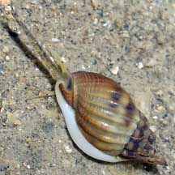
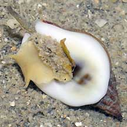
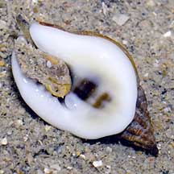
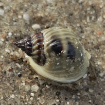
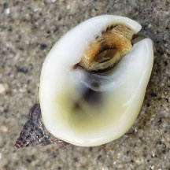
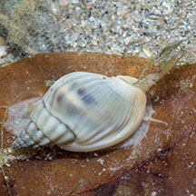

|
|
| shelled snails text index | photo index |
| Phylum Mollusca > Class Gastropoda > Family Nassariidae |
| Black
whelk Nassarius pullus Family Nassariidae updated Aug 2020 Where seen? This little whelk with a broad base on the underside is sometimes seen in sandy areas on our Southern shores. Features: 1.5-2cm. Shell thick conical with neat, regular ridges. Shell plain brown or bluish grey often with two smudgy broad darker bands. Underside with a distinctive broad flat white smooth base, a dark blotch in the centre and 'teeth' at the shell opening. Body pale. Pperculum thin and yellow. |
 Sisters Islands, Feb 06 |
 |
 |
| Black whelks on Singapore shores |
On wildsingapore
flickr
|
 Changi East (Lost Coast). Dec 25  Photo shared by Richard Kuah on facebook. |
 Kusu Island, Aug 17 Photo shared by Marcus Ng on flickr. |
Links
|